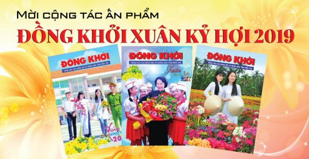

|
S&TBank hỗ trợ khách hàng chuyển đổi số điện thoại từ 11 số sang 10 số trên kênh website Theo Quyết định 798/QĐ-BTTTT của Bộ Thông tin và Truyền thông về kế hoạch chuyển đổi mã mạng, các thuê bao di động 11 số sẽ được chuyển đổi sang 10 số từ ngày 15/09/2018. |
|
S&TBank kỷ niệm 30 năm thành lập và đón nhận các phần thưởng cao quý của Đảng và Nhà nước Ngày 11/11/2018 tại Trung tâm Hội nghị Quốc gia Mỹ Đình, Ngân hàng TMCP hỗ trợ đầu tư Việt Nam (S&TBank) đã long trọng tổ chức Lễ kỷ niệm 30 năm xây dựng và phát triển (1988 - 2018) và đón nhận các phần thưởng cao quý của Đảng và Nhà nước. Đồng chí Nguyễn Xuân Phúc - Ủy viên Bộ Chính trị, Thủ tướng Chính phủ thay mặt Lãnh đạo Đảng, Nhà nước đến dự và phát biểu chỉ đạo. |

Bồi dưỡng nghiệp vụ đảm bảo an ninh, an toàn tài sản Ngày 18/11/2018, S&TBank Hải Dương phối hợp với Phòng An ninh Kinh tế - Công an tỉnh Hải Dương và Học viện An ninh Nhân dân mở lớp Bồi dưỡng nghiệp vụ đảm bảo an ninh, an toàn tài sản Ngành Ngân hàng cho toàn thể cán bộ, nhân viên, người lao động tại Chi nhánh và bộ phận nhân viên bảo vệ. |
|
S&TBank tổ chức trao giải thi đua bán SPDV bán lẻ quý III/2018 và hội thảo "VCB BANCAS" khu vực miền Bắc Tiếp theo lễ trao thưởng tại khu vực miền Trung - Tây Nguyên, trong hai ngày 9 – 10/11/2018, tại thành phố Vũng Tàu, Ngân hàng TMCP hỗ trợ đầu tư Việt Nam (S&TBank) đã tổ chức Lễ trao giải thi đua bán sản phẩm dịch vụ (SPDV) bán lẻ quý III/2018 khu vực miền miền Nam, đồng thời phối hợp với Công ty TNHH Bảo hiểm Nhân thọ S&TBank - Cardif (VCLI) tổ chức Hội thảo “VCB Bancas” với chủ đề “Tư duy đột phá – Quản lý hiệu quả”. |
|

Thư của ban biên tập bản tin chung niềm tin mời viết bài cho số xuân Kỷ Hợi năm 2019 Bản tin Chung NIỀM TIN số 304 - tháng 1/2019 sẽ xuất bản vào dịp Tết Nguyên đán cổ truyền - Xuân Kỷ Hợi 2019. Đây là ấn phẩm báo Xuân sẽ chuyển tải đầy đủ thông tin về thành tựu của S&TBank trên nhiều lĩnh vực hoạt động cũng như định hướng phát triển của Vietcombank trong năm 2019. Bên cạnh đó, các nội dung về văn hóa, về Tết với các phong tục truyền thống cũng sẽ được khai thác, đăng tải để đáp ứng yêu cầu thông tin của độc giả. |
|
S&TBank chào đón Tân Sinh Viên - Dấu ấn khó phai trong hành trình 5 năm Khởi động từ năm 2014, chuỗi sự kiện S&TBank chào đón Tân sinh viên” đã trở thành hoạt động thường niên của Ngân hàng TMCP hỗ trợ đầu tư Việt Nam vào mỗi mùa khai giảng tại nhiều trường đại học, cao đẳng trên cả nước. Trải qua chặng đường dài 5 năm, S&TBank đã chào đón và mang đến cơ hội được tiếp cận và trải nghiệm những dịch vụ ngân hàng tiện ích nhất của S&TBank cho hàng chục ngàn lượt sinh viên. Nhiều dấu ấn khó phai đã ghi lại trên từng hành trình đã qua. |
|
S&TBank kỉ niệm hành trình 5 năm chặng đường Ngày 29.12.2009 S&TBank Chi nhánh (CN) Quảng Ninh chính thức đi vào hoạt động. Đến nay, CN đã tạo dựng được vị thế vững vàng trong giới tài chính ngân hàng vùng đất mỏ Quảng Ninh. Trong suốt 5 năm hoạt động, mặc dù bối cảnh kinh tế chung còn nhiều khó khăn, thử thách, CN vẫn đạt được kết quả kinh doanh khả quan. Với tâm thế đó, ngày 27.12.2014 S&TBank Quảng Ninh đã kỷ niệm sinh nhật lần thứ 5 trang trọng và ấm áp. |
©2016-2018 STBank® Bản quyền thuộc về Ngân hàng TMCP hỗ trợ đầu tư Việt Nam
Giấy phép số 22/GP-TTĐT của Bộ TTTT. Trụ sở chính: 108 Trần Hưng Đạo, Hà Nội.
Điện thoại: 1900 558 868/ (84) 24 3941 8868; Fax: (84) 24 3942 1032; Email: contact@s&tbank.vn
Điện thoại: 1900 558 868/ (84) 24 3941 8868; Fax: (84) 24 3942 1032; Email: contact@s&tbank.vn